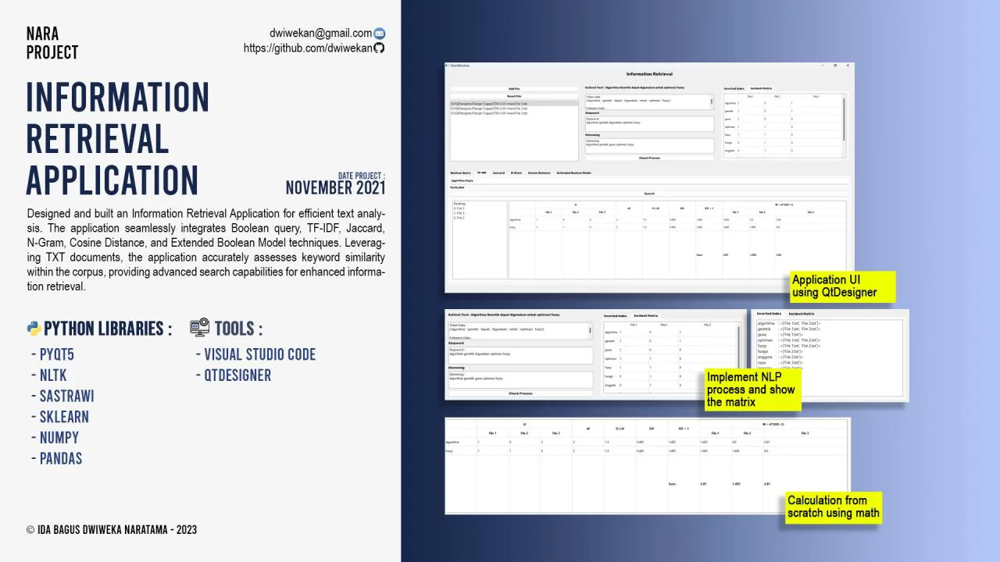

Course project, Udayana University
Information Retrieval Application
Desktop search engine over text documents combining Boolean queries, TF-IDF, Jaccard, n-grams, cosine distance and the extended Boolean model.
- Role
- Developer
- When
- Nov 2021
- Where
- Course project, Udayana University
Overview
A desktop information retrieval application for text analysis. It combines Boolean queries, TF-IDF, Jaccard similarity, n-grams, cosine distance and the extended Boolean model to score keyword similarity across a corpus of text documents, with a Qt interface built in Qt Designer.
